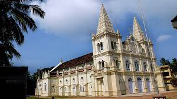

Ernakulam
Fort Kochi
Fort Kochi can be accessed from Ernakulam through roadways and water ways. Private buses and government transport buses travel from different parts of the city to Fort Kochi. Owing to the high volume of tourists visiting the place dedicated low floor Volvo buses were introduced to this route by the government. Such buses are in use on the popular routes such as Cochin International Airport (CIAL), Vytila Mobility Hub and Kakanad Info Park.

Santa Cruz Basilica
The Santa Cruz Cathedral Basilica (also known as കോട്ടേപള്ളി / Kottepalli) at Fort Kochi, Kochi is one of the nine Basilicas in Kerala. Counted as one of the heritage edifices of Kerala, this church is one of the finest and most impressive churches in India and visited by tourists the whole year round. It is a place of devotion as well as a center of historic significance, endowed with architectural and artistic grandeur and colours of the gothic style.
Bhoothathankettu Dam & Reserve Forest
Bhoothathankettu is a dam and tourist spot in Ernakulam district in Kerala, India. It is situated outside the village of Pindimana, about 10 km away from the town of Kothamangalam and 50 km away from the main city of Kochi. The original natural dam has been supplemented by a modern dam impounding the Bhoothathankettu Reservoir (Thattekad Reservoir).
Cherai Beach
Around two dozen kilometres from the industrial district of Ernakulam and to the side of the Vypeen Island lies every swimmer’s paradise, Cherai Beach. It is a favourite haunt of those looking for a relaxing swim with the backdrop of coconut groves being the added incentive. It provides a wonderful view of the famous Chinese Fishing Nets or Cheena Vala well. The nearby shacks provide you with fresh cuisine that fills you up perfectly after a delightful swim.
Marine Drive
Marine Drive is a picturesque promenade in Kochi, India.[1] It is built facing the backwaters, and is a popular hangout for the local populace. Despite its name, no vehicles are allowed on the walkway. Marine Drive is also an economically thriving part of the city of Kochi.[2] With several shopping malls it is as an important centre of shopping activity in Kochi.